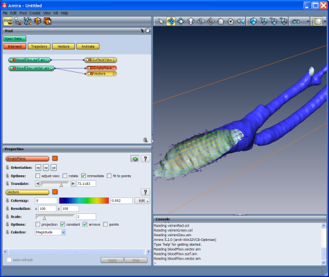
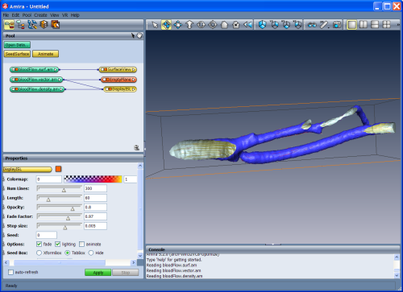
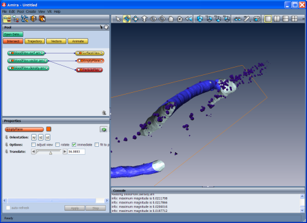

This step-by-step-tutorial briefly explains some Mesh Option modules for vector
field visualization. The use of these modules is explained by visualizing data
representing the blood flow inside the carotid artery obtained with a simple numerical simulation.
The image data used to segment the carotid are courtesey of Dr. Sell, University of
Erlangen, Germany.
The following topics will be covered in this tutorial:
- How to simply represent of a vector field
- Use of Illuminated Stream Lines to visualize the flow
- Extend the visualization with animated Particle Plot
As in the previous tutorials, we will use the file dialog to import data.
- Load the surface model of the carotids bloodFlow.surf.am from the
tutorial directory data/tutorials/vector.
- Attach an SurfaceView module to this data object (see
the Surface reconstruction tutorial).
- Load the data set called bloodFlow.vector.am from the
tutorial directory data/tutorials/vector.
- Connect a Vectors module to the vector field bloodFlow.vector.am.

Figure 29:
Surface of the carotis clipped and the inner vector field represented with simple vecotrs
The vector field itself is stored in Amira's native AmiraMesh file format.
The data represents the simulated flow inside the carotids computed on a regular grid.
By selecting the green data icon bloodFlow.vector.am, you can find out in the Properties
that the number of grid nodes in x,y,z-direction is 116 x 81 x 227.
Besides SurfaceView, two new objects are available now in the Pool, Vectors and EmptyPlane. The module Vectors
specifies how the vectors are visualized and the module EmptyPlane
identifies on which the plane.
- Set the Resolution of the Vectors module to 100 in X and Y
- Check in Options the toggles constant and keep arrows checked
- Right-click on the colorbar of the port Colormap, select the
physics colormap and set the upper value to 0.002.
- In the module EmptyPlane click on the "YZ" button and on the "Clip" button
on the upper-right corner of the Properties (beside to the question mark button).
- Rotate the object in the viewer and slide the slider of the port Translate
of EmptyPlane to explore the vector field inside the carotid.
The vectors are represented as arrows equal in length, but varying in color.
The color, taken from the colormap, indicates the vector's magnitude. To use
the length of the arrows to indicate the magnitude, deselect the toggle
constant in the Options port.
Illuminated Stream Lines is a technique for interactive 3D
vector field visualization which makes use of large numbers of
properly illuminated stream lines. A realistic shading model is
employed which significantly increases realism of the resulting images
and enhances spatial perception.
Now you will learn which tools are used for illuminated stream line
visualization and how to use them to get a 3D impression of our blood flow
vector field.
- Remove the Vectors module.
- Connect a DisplayISL module to the vector field bloodFlow.vector.am
by right-clicking on it and selecting Display->DisplayISL.
- Set Num Lines to 300.
- Press the Apply button.
A TabBox appears in the viewer. Only stream lines flowing through
this box are visible. The green tabs at the corners and edges of the
box allow you to change the dimensions of the box.
- Switch the viewer into interact mode.
- Try out what happens if you click with the left mouse button on
one of the green tabs on the corners or edges of the TabBox and
drag them around.
- To move the whole TabBox, click with the left mouse button
in the box and move it.
- Try to get the TabBox into a shape and position as shown in
the image.
- Press Apply button again in order to recalculate the stream
lines.
- As we did before, slide the slider of the port Translate of
EmptyPlane to explore the vector field inside the carotid.
You can colorize of the stream lines according to a scalar data set of the same
size and even animate the lines.
- Load bloodFlow.density.am from the
tutorial directory data/tutorials/vector. This data set represents the 3D scalar field
of the simulated fluid densitiy associated with the 3D vector field.
- Click on the white little square of the DisplayISL icon, select Color Field
and attach bloodFlow.density.am.
- The port Colormap is now available in the Properties window of DisplayISL.
Right-click on the color bar and select temperature.icol,
set the colormap interval to 0-1 and press Apply.
- To animate the stream lines just check the toggle animate in the port Options.

Figure 30:
Illuminated blood flow stream lines with particle plot
This module visualizes scalar vector fields by particles (cones) pointing
in the direction of the local flow. The placement of particles can be done
similar to the distribution modes of the DisplayISL module we have seen above.
The particles are animated to generate a sequence of objects "walking" through the vector field.
- Remove the DisplayISL module.
- Connect a ParticlePlot module to the vector field bloodFlow.vector.am.
- In the port Option and Option2 set NumCones to 10, Height to 0.8
and Radius to 0.5.
- Right-click on the slider of the port Animate and select Loop.
Click now the play button to start the animation.

Figure 31:
Blood flow visualized with particle plot and the reconstructed carotid surface
{kind=link}
{kind=link}
{kind=link}